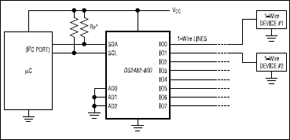

Thermometers¶
Contents
Sensors: DS18B20¶
The DS18B20 Onewire temperature sensor is frequently used in comparable settings 1. You can finds parts that come prepackaged in a metal case; these are still affordable, and really easy to deploy.

DS18B20, nicely packaged in a metal case with cable¶
DS18B20, mounted on real hardware¶
Cabling¶
A Onewire device has three wires attached to: data, ground, and power. Data and ground are mandatory, obviously. Power is optional; if omitted, the device is said to be operated in parasitic mode.
That said, I use all three wires, mainly because rumours go that communication is more stable then. (I cannot say, tried both, no difference.)
RJ11, Telephone Wires¶
“Telephone” cables have four wires (only three are used); you can buy them everywhere. Telephones are connected with RJ11 plugs. I use this setting in the following way.
{kind=link}
With this at hand,
sensors with plugs
cables with plugs on either side
there’s two more things you need to be happy,
{kind=link}
RJ11 coupler¶
Note
Please don’t think that I am so picky and exact in everything I do. Only when I know I am really bad at something (like money) I tend to be exact.
Onewire Caveats¶
For stability, a Onewire setup should not exhibit a star topology. Rather, it is best to have a long line, with only short branches where the sensors are attached.
I have multiple long lines from the “central” (in the basement next to the oil burner) to the various branching points,
Hot water boiler. A 1000l thing which has three thermometers: bottom, middle, top. These thermometers, and two more for the solar water circuit, branch off from the end of a ca. 15m line.
Wood oven in the living room. A ca. 8m line, having another four thermometers.
One long 15m line where one room thermometer sits in the middle adn one at the end.
Maxim Integrated has a tutorial, Guidelines for Reliable Long Line 1-Wire Networks. There they define the terms radious and weight; it is definitely worth reading.
Onewire Master and Stability¶
w1-gpio: Bitbanging¶
Initially I was using the w1-gpio kernel module, where you
dedicate one GPIO to one Onewire line. Communication is done in
software - the kernel driver bitbangs the Onewire protocol onto the
line. I had dedicated three GPIOs, one each for the lines listed
above.
Configuration is easy; in /boot/config.txt you write,
dtoverlay=w1-gpio,gpiopin=7
dtoverlay=w1-gpio,gpiopin=26
dtoverlay=w1-gpio,gpiopin=27
, and connect the respective pins to the three bus lines.
During that time, there were still instabilities; I summarize them here for reference (and because in my nightmares I see those coming back).
Devices disappear, and are replaced by ones that are named like
00-0c4000000000. Here,00is the family which is completely bogus; for example, 28 (hex) would be the expected familiy. (I believe 0x28 stands for “Dallas”).Reading fails a CRC check,
$ cat /sys/bus/w1/devices/28-02131d9920aa/w1_slave 20 01 4b 46 7f ff 0c 10 5d : crc=5d NO 20 01 4b 46 7f ff 0c 10 5d t=18000
Reading gives me a temperature of 0 degrees.
$ cat /sys/bus/w1/devices/28-011432f138f9/w1_slave 00 00 00 00 00 00 00 00 00 : crc=00 YES 00 00 00 00 00 00 00 00 00 t=0
This is the worst thermometer error you can encounter because it does not declare himself as such. One can imagine what sorts of heating control misbehavior a room temperature of zero degrees would cause.
Over time, I was able to reduce the instabilities by cutting the initial star topology down to what I describe above. Still, there were some glitches from time to time. I blame those on the bitbanging in software. Onewire is a slow and easy protocol, but there are still timing constraints that might not be met in some cases.
Sure, I could have tried the Linux realtime options to get better response and timing guarantees. On the other hand, heating control is something that is exactly the opposite of realtime. If a pump is turned on a minute too late, still nothing burns down - this is not a nuclear power plant.
So no: no realtime wanted. Especially because it would have been just another tryout.
DS2482-800+: Master on I2C¶
The DS2482-800 is an eight port Onewire master that is connected to the CPU via I2C. Eight port means, you can have eight long Onewire lines with one chip. Cool; should have done that earlier 2.
Setup is easy; here’s a little excerpt from the datasheet.
Pullups are sized 2.2K; you can find that mentioned somewhere in the datasheet 3.
To tell the Raspi and Linux about it,
Enable I2C on the Raspi¶
In /boot/config.txt you write
dtparam=ic2=on
i2c_arm=on
(In /boot/overlays/README both are documented, so I write both. I
can imagine that one can be omitted, but I don’t care.)
Announce the I2C device to the OS¶
In the above diagram, pins AD0, AD1, and AD2 are connected
to ground, which yields I2C address 0x18 for the device.
# echo ds2482 0x18 > /sys/bus/i2c/devices/i2c-1/new_device
This creates a new I2C device in sysfs,
/sys/bus/i2c/devices/i2c-1/1-0018/, and loads the ds2482
kernel module. Onewire devices are probed, and appear in
/sys/bus/w1/devices/, just like with w1-gpio.
Here’s a systemd unit that does just that,
[Unit]
Description=Instantiate DS2482 at I2C-1@0x18
After=basic.target
[Service]
Type=oneshot
ExecStart=/bin/sh -c '/bin/echo ds2482 0x18 > /sys/bus/i2c/devices/i2c-1/new_device'
[Install]
WantedBy=openheating-thermometers.service
The effect? No sensor outages since I deployed the DS2482-800 (which is roughly two months as of this writing).
Footnotes